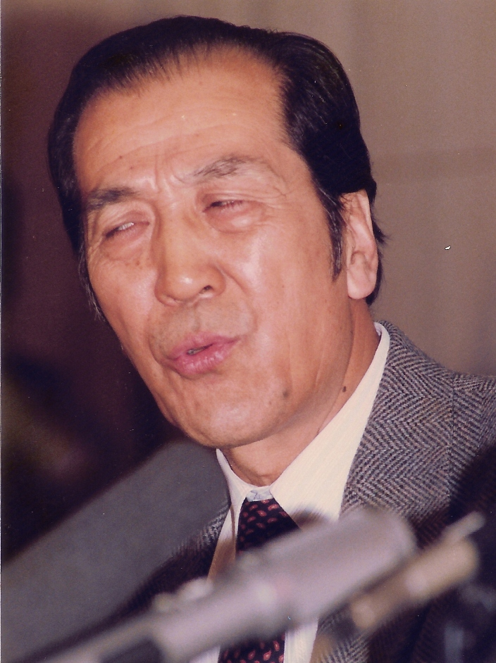
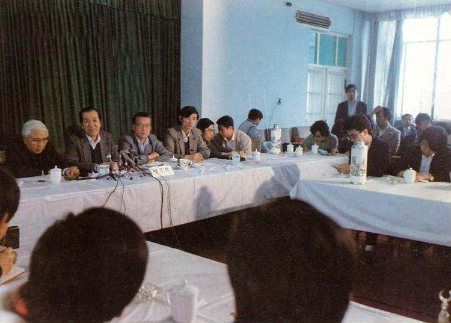
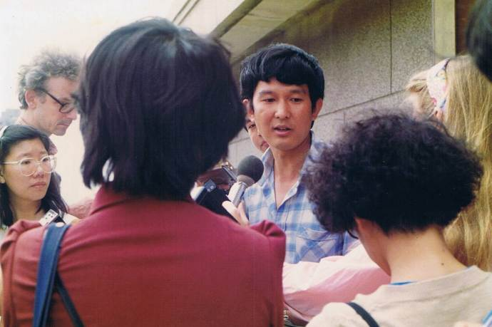
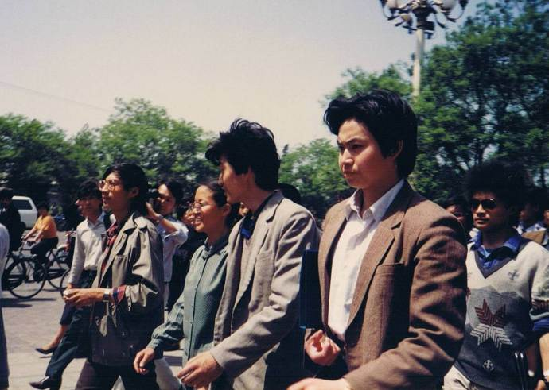
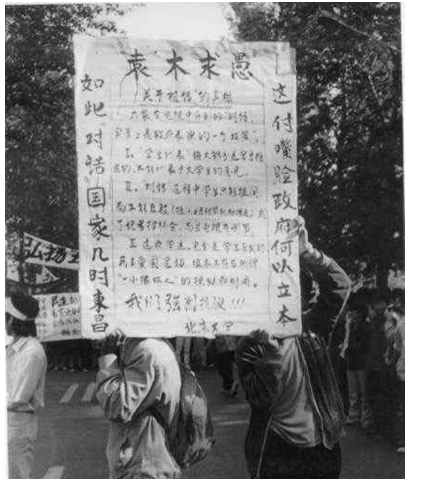

上一个帖子介绍了4·27大游行的经过。今天重点说一下4月29日官方与学生之间的公开对话。
4月28日这天没有发生太重大的事情。俺简单说一下那天发生的几件小事。
“临时学联”在28日正式改名为“北京市高校学生自治联合会”（简称“高自联”或“北高联”）。
顺便说一下：某些介绍六四的书籍/资料称“高自联”是4月28日成立，其实不准确。因为“临时学联”和“高自联”是同一个组织，只是名号不同。严格算起来，临时学联（高自联）在4月23日晚上就成立了（俺在“这里”有介绍）。
“临时学联”（高自联）的第一任主席是周勇军。俺在前一个帖子提到过，周勇军因为受官方胁迫，被逼写了“取消427游行”的手谕。“高自联”的很多常委对此事不满。28日这天进行了主席改选，周勇军被罢免，北师大的吾尔开希当选第二任主席。
427大游行之后，北京各个高校新增的大字报，有很多是要求政府与学生展开对话。
清华大学贴出署名“清华人”的题为《对话11条》的大字报，提醒学生把重点转向研究对话的先决条件，并提出了对话内容的建议，主要是：
在427大游行之前，学生们已经进行过多次请愿并希望跟朝廷高层展开直接对话，但是朝廷高层一直不予理睬。之后，更是在《四二六社论》中，污蔑学运为动乱。
为啥到了4月29日，朝廷的态度突然转变，主动邀请学生进行公开对话？
这其中的奥妙在于：
426社论非常不得人心，因此激发出声势浩大的427大游行。俺在前一篇帖子介绍过，“427大游行”不光人数众多、规模空前，而且得到了社会各界的支持和参与（连朝廷喉舌《人民日报》的工作人员也参与游行）。面对这种局面，朝廷高层的某些改革派也指责426社论是激化矛盾，不合时宜。
凡此种种，都给临时监国的李鹏造成很大的压力。在这种情况下，李鹏才授意他的亲信袁木、何东昌去跟学生对话。
另外，在《改革历程——赵紫阳回忆录》一书中也提到：
在4月29日的对话中，唱主角的是国务院新闻发言人袁木。此人堪称朝廷宣传战线上的一朵奇葩。有网友戏称：“六四事件”之后，找不到哪个官方的发言人能够比他更厚颜无耻。所以，俺值得费点口水，专门介绍一下袁木其人。
在《天安门文件》一书，有提到此人的发家史，现引用如下。引文中的小括号是俺加的注解。
顺便再说一个事儿：
话说“六四运动”被血腥镇压之后不久，面对苏联和东欧剧变，袁木这个发言人又开始大肆抨击“美帝国主义”如何搞和平演变，如何霸权——简直把美国政府骂成臭头。但是谁曾想，六四刚结束不久，袁木就把老婆和独生女统统送到美国并拿了美国国籍。
通过这个例子，大伙儿应该明白：【朝廷高官的口头言论往往是虚的，关键要看他们的实际行动】。
为了给大伙儿一个感性的认识，再放上他本人的高清写真一张 :)

（大忽悠袁木的高清写真）
既然是朝廷高层主动提出对话，官方自然做好充足的准备工作。下面俺介绍一下官方为这次对话所做的种种准备。聪明的读者应该能看出某些企图。
在朝廷的安排下，如下几人粉墨登场：
袁木（国务院发言人）
何东昌（国家教委副主任）
袁立本（北京市政府秘书长）
陆宇澄（北京副市长）
这次对话，由官方的“全国学联”出面，共邀请了45名学生代表，分别来自北京的16所高校。这45人中，除了吾尔开希、周勇军、项小吉、郭海峰4人，其它学生代表都来自于官方学生会的学生干部。据说某些学校的对话代表还是由校领导亲自挑选的“可靠”人选。
这样一个学生代表的名单，显然不具有广泛的代表性。这是此次对话备受争议的焦点之一。
对话的时间确定为4月29日下午2点30分。
但是朝廷很狡猾，一直到4月29日中午才通知相关的学生代表。这就使得吾尔开希、周勇军、项小吉、郭海峰这些人没有足够的时间去准备。
对话的时间安排是又一个受争议的因素。
对话的地点也很有讲究。官方挑选的地点是“全国学联的会议室”。为啥要选在朝廷的办公地点捏？最大的好处在于，可以阻扰非官方的媒体入内。
据香港记者蔡淑芳在《广场活碑——一个香港女记者眼中的六四血光》一书中提到：
通常的对话，双方应该是平等的，双方都可以畅谈。但是朝廷组织的这次“429对话”，却很另类——
首先，每个学生代表只有一次发言的机会，而且只能以“提问的形式”发言。
其次，很多代表来自官方的学生会，其中一些人只是提一些无关痛痒的问题。
正因为这样的一种对话形式，被很多人讥讽为：“唱双簧的对话”、“变相的新闻发布会”。
下面这两张照片是在当时的会场上拍摄的（照片摘自 六四档案）。

会议开始不久，就出现纷争——项小吉对代表权的问题提出质疑：
之后不久，作为代表之一的吾尔开希，要求以高自联主席的身份发言，被拒绝。官方的理由是：高自联是不被认可的非法学生组织。由于发言被拒，吾尔开希愤而退场，以示抗议。走到大门口，正好外面围着很多记者。吾尔开希当众揭露这次对话是一个骗局。
在整个对话的大部分时间里，基本上是袁木一个人在唱独角戏。为啥会这样捏？因为每个学生代表只能“提问”，不能畅所欲言。而且提问一结束，话筒就被拿走。所以，学生代表根本无法针对袁木所说的话进行反驳，只能听他一人在台上滔滔不绝。这家伙不光口才很好，而且能够用很诚恳，很严肃的表情说出各种弥天大谎。俺随便据2个例子（以下谈话内容摘自《天安门文件》）。
针对当时全国经济改革面临的困境，有学生问道：“中央如何过紧日子？”
袁木答道：
（编程随想注：所谓的“不再去北戴河避暑”、“不再进口豪华的办公用车”，都是袁木临时瞎编的。当时的裆中央根本没有这样的决议。话说20多年之后，裆中央去北戴河避暑的风气更盛了，进口的豪华公车更多更贵了）
有学生问了新闻报道的真实性问题。
袁木答道：
（编程随想注：所谓的"我国没有新闻检查制度"，更是公然扯蛋。就在429对话的前3天，上海的江泽民刚刚出重手整顿了《世界经济导报》。话说20多年之后，朝廷的新闻检查制度更加霸道了）
所谓的"对话"持续了大约3到4小时，到傍晚时分才结束。下面是双方代表离开会场的照片（摘自香港记者蔡淑芳的博客）
（照片中这位官方代表大概是袁立本）

（这位被记者团团围住的是项小吉。后来成立的对话代表团，他是召集人——相当于负责人）

（离镜头最近的学生代表是周勇军）
会议结束之后，朝廷把会议的录像进行了精心剪辑（删掉某些敏感的言论片段），然后在当晚的 CCTV 上播出。那会儿天朝总共就没几个电视频道，对大部分电视观众而言，CCTV 几乎是必看的。所以袁木一下子就火了。
但是他扯蛋扯得太离谱了，明眼人一看就明白这家伙在信口忽悠。由于袁木的扯蛋给人的印象太深刻了，他本人几乎成了“扯蛋”的代名词。那阵子北京人吵架，如果要骂对方愚蠢傻逼，就说：“你李鹏！”如果要骂对方瞎扯淡，就说：“你袁木！”
当时的大学生编了一副对联，把三个官方代表的名字嵌入对联中，以示嘲讽：

虽然在民间被臭骂，但袁木的仕途却春风得意。据说李鹏看完对话的录像，很满意地说：
俺刚才已经介绍过：官方为准备这次对话，搞了很多小动作。这些自然没能瞒过各大高校学生的眼睛。29日当晚，全国各大城市有不少高校学生上街游行，抗议政府自编自导自演的"对话"。在当晚的游行中，以武汉和兰州两地的声势最浩大。相比而言，帝都北京反而显得平静。
以下是这两个城市的地方官发给裆中央的密报（摘自《天安门文件》）。
湖北省委在4月30日凌晨4点发给裆中央的电报：
经历了429对话，高自联的领导层也在思考对策。当时高自联面临的两个问题：一是缺乏合法性，二是缺乏跟政府对话的渠道。其中合法性是对话的基础。只要朝廷不承认高自联的合法地位，就不可能跟高自联进行平等对话。为了解决这两问题，高自联的领导层想了几条对策。
1、专门成立一个对话团（独立于高自联之外），负责跟政府对话（在后续的帖子，俺会专门介绍“对话团的成立”）
2、尽量扩大高自联的影响——影响大了之后，迫使政府承认其合法性。
在本系列的后续帖子，会介绍高自联组建对话团的事情。
回到本系列的目录
★4月28日简述
4月28日这天没有发生太重大的事情。俺简单说一下那天发生的几件小事。
◇“临时学联”改名“高自联”
“临时学联”在28日正式改名为“北京市高校学生自治联合会”（简称“高自联”或“北高联”）。
顺便说一下：某些介绍六四的书籍/资料称“高自联”是4月28日成立，其实不准确。因为“临时学联”和“高自联”是同一个组织，只是名号不同。严格算起来，临时学联（高自联）在4月23日晚上就成立了（俺在“这里”有介绍）。
◇“高自联”主席换人
“临时学联”（高自联）的第一任主席是周勇军。俺在前一个帖子提到过，周勇军因为受官方胁迫，被逼写了“取消427游行”的手谕。“高自联”的很多常委对此事不满。28日这天进行了主席改选，周勇军被罢免，北师大的吾尔开希当选第二任主席。
★429对话的背景
◇学生方面
427大游行之后，北京各个高校新增的大字报，有很多是要求政府与学生展开对话。
清华大学贴出署名“清华人”的题为《对话11条》的大字报，提醒学生把重点转向研究对话的先决条件，并提出了对话内容的建议，主要是：
1. 关于贪官污吏和官倒问题北京大学贴出无署名的《对话基础的七条建议》的大字报：
2. 教育经费，教师待遇问题
3. 新闻自由、新闻立法问题
4. 学生运动性质问题
5. 公正评价胡耀邦问题
......
1. 必须公开承认学生自治会为合法学生组织（以上摘自官方出版的《惊心动魄的五十六天》53页和56页）
2. 必须澄清「4.20」新华门事实真相
3. 必须公开全面报导「4.22」天安门广场请愿活动
4. 必须彻底否定「4.26」《人民日报》社论
5. 必须公开全面地报导「4.27」学生游行示威活动的全过程以及目的
6. 对话必须在平等基础上进行。对话的时间、地点和双方代表以及人数由双方共同协商决定
7. 对话必须公开进行，允许中外记者采访报导
◇朝廷方面
在427大游行之前，学生们已经进行过多次请愿并希望跟朝廷高层展开直接对话，但是朝廷高层一直不予理睬。之后，更是在《四二六社论》中，污蔑学运为动乱。
为啥到了4月29日，朝廷的态度突然转变，主动邀请学生进行公开对话？
这其中的奥妙在于：
426社论非常不得人心，因此激发出声势浩大的427大游行。俺在前一篇帖子介绍过，“427大游行”不光人数众多、规模空前，而且得到了社会各界的支持和参与（连朝廷喉舌《人民日报》的工作人员也参与游行）。面对这种局面，朝廷高层的某些改革派也指责426社论是激化矛盾，不合时宜。
凡此种种，都给临时监国的李鹏造成很大的压力。在这种情况下，李鹏才授意他的亲信袁木、何东昌去跟学生对话。
另外，在《改革历程——赵紫阳回忆录》一书中也提到：
4·26 社论的发表，造成了学生大游行，机关、团体、学校、民主党派对李鹏及北京市的领导人一片埋怨和责怪之声。而李鹏决定4月25和26日在北京及各地大范围地传达邓4月25日讲话，也引起了对邓的不少议论和批评。邓和他的家人对这件事很有意见。邓的家人说，李鹏等人一下子把邓抛到了第一线，自己去做好人。前面我也说过，一直到5月17日政治局常委会上讨论对学潮处理、最后决定实行戒严的那次会议，邓还当面就这件事批评了李鹏。
在这种情况下，因“4·26社论”造成了“4·27大游行”，造成了整个社会上各方面对“4·26社论”的不满意。李鹏不得不让鲍彤又写了“4·29社论”，并要袁木、何东昌与学生对话。
★袁木其人
在4月29日的对话中，唱主角的是国务院新闻发言人袁木。此人堪称朝廷宣传战线上的一朵奇葩。有网友戏称：“六四事件”之后，找不到哪个官方的发言人能够比他更厚颜无耻。所以，俺值得费点口水，专门介绍一下袁木其人。
在《天安门文件》一书，有提到此人的发家史，现引用如下。引文中的小括号是俺加的注解。
袁木此人，原系新华社记者，以能说会道著称。文化大革命中，因善于查言观色而受宠于当时的国务院副总理纪登奎（纪登奎是毛太祖晚年的宠臣）。一九八三年，差点因文革污点而打成“三种人”（关于“文革三种人”，请看“这里”的介绍），在国务院办公厅调研室党的组织生活会上，痛陈自己失足，流下了“悔恨”的眼泪。最后，还是李先念替他说话（因袁木参与《李先念文选》的编纂），才过了一关。一九八四年到一九八七年，他借调到中央财经领导小组，但一直在国务院办公厅调研室领工资。因为不受重用，总是唉声叹气，感慨自己官运不济。一九八八年，李鹏就任国务院总理，袁木终于瞅准了这一机会，说动了李鹏，由他充当国务院新闻发言人。在整个“六四事件”中，袁木利用他的厚脸皮和三寸不烂之舌，不但为李鹏立下了汗马功劳，也留下了很多脍炙人口的经典谎言。在后面的博文中，俺还会再提到此人的名言。
顺便再说一个事儿：
话说“六四运动”被血腥镇压之后不久，面对苏联和东欧剧变，袁木这个发言人又开始大肆抨击“美帝国主义”如何搞和平演变，如何霸权——简直把美国政府骂成臭头。但是谁曾想，六四刚结束不久，袁木就把老婆和独生女统统送到美国并拿了美国国籍。
通过这个例子，大伙儿应该明白：【朝廷高官的口头言论往往是虚的，关键要看他们的实际行动】。
为了给大伙儿一个感性的认识，再放上他本人的高清写真一张 :)
（大忽悠袁木的高清写真）
★官方的准备工作
既然是朝廷高层主动提出对话，官方自然做好充足的准备工作。下面俺介绍一下官方为这次对话所做的种种准备。聪明的读者应该能看出某些企图。
◇对话的官方代表
在朝廷的安排下，如下几人粉墨登场：
袁木（国务院发言人）
何东昌（国家教委副主任）
袁立本（北京市政府秘书长）
陆宇澄（北京副市长）
◇对话的学生代表
这次对话，由官方的“全国学联”出面，共邀请了45名学生代表，分别来自北京的16所高校。这45人中，除了吾尔开希、周勇军、项小吉、郭海峰4人，其它学生代表都来自于官方学生会的学生干部。据说某些学校的对话代表还是由校领导亲自挑选的“可靠”人选。
这样一个学生代表的名单，显然不具有广泛的代表性。这是此次对话备受争议的焦点之一。
◇对话的时间
对话的时间确定为4月29日下午2点30分。
但是朝廷很狡猾，一直到4月29日中午才通知相关的学生代表。这就使得吾尔开希、周勇军、项小吉、郭海峰这些人没有足够的时间去准备。
对话的时间安排是又一个受争议的因素。
◇对话的地点
对话的地点也很有讲究。官方挑选的地点是“全国学联的会议室”。为啥要选在朝廷的办公地点捏？最大的好处在于，可以阻扰非官方的媒体入内。
据香港记者蔡淑芳在《广场活碑——一个香港女记者眼中的六四血光》一书中提到：
在召開會議之前，香港記者繼續向學聯爭取進入會場，到正式開會時，國內的新聞媒介，包括《中央電視台》、《中央廣播電台》、《新華社》、《中國青年報》、《北京青年報》等記者，均獲准進場採訪，香港及台灣的記者則被拒諸門外，香港兩份親中報紙的記者亦不例外。
記者在學聯大樓門前進行交涉，負責人只解釋因為事前沒有報名的不能進內，而且會場內已擠滿人，不能安排港、台記者進去，於是記者抗議不公平對待時，該負責人承認，但始終沒給予機會進入採訪。事實上，部份香港記者曾聯絡中共全國記協，但獲得答覆是需要全國新聞工作者協會的「介紹信」才可採訪。
◇对话的形式
通常的对话，双方应该是平等的，双方都可以畅谈。但是朝廷组织的这次“429对话”，却很另类——
首先，每个学生代表只有一次发言的机会，而且只能以“提问的形式”发言。
其次，很多代表来自官方的学生会，其中一些人只是提一些无关痛痒的问题。
正因为这样的一种对话形式，被很多人讥讽为：“唱双簧的对话”、“变相的新闻发布会”。
★对话的经过
下面这两张照片是在当时的会场上拍摄的（照片摘自 六四档案）。
会议开始不久，就出现纷争——项小吉对代表权的问题提出质疑：
对话是在国务院与首都全体高校的学生代表之间进行，而今天所到的学生不具有这种代表权。从所到学校看，只有十六所；从所到的同学看，并没有经过普选产生。所以说，今天所到的学生不具有这种代表权。所以今天只是一个接触会议，而不是广大学生所要求的对话。
之后不久，作为代表之一的吾尔开希，要求以高自联主席的身份发言，被拒绝。官方的理由是：高自联是不被认可的非法学生组织。由于发言被拒，吾尔开希愤而退场，以示抗议。走到大门口，正好外面围着很多记者。吾尔开希当众揭露这次对话是一个骗局。
在整个对话的大部分时间里，基本上是袁木一个人在唱独角戏。为啥会这样捏？因为每个学生代表只能“提问”，不能畅所欲言。而且提问一结束，话筒就被拿走。所以，学生代表根本无法针对袁木所说的话进行反驳，只能听他一人在台上滔滔不绝。这家伙不光口才很好，而且能够用很诚恳，很严肃的表情说出各种弥天大谎。俺随便据2个例子（以下谈话内容摘自《天安门文件》）。
针对当时全国经济改革面临的困境，有学生问道：“中央如何过紧日子？”
袁木答道：
往年中央、国务院常常要到北戴河去办公。......这要增加一笔财政开支。......今年考虑到这个不大行，因为这和要求制订政策过紧日子的要求不大协调，已经正式宣布不去了。从此我想也不会再去了。并己决定从现在开始，不再进口豪华汽车。......
（编程随想注：所谓的“不再去北戴河避暑”、“不再进口豪华的办公用车”，都是袁木临时瞎编的。当时的裆中央根本没有这样的决议。话说20多年之后，裆中央去北戴河避暑的风气更盛了，进口的豪华公车更多更贵了）
有学生问了新闻报道的真实性问题。
袁木答道：
我可以很负责地告诉大家，我们国家现在没有新闻检查制度，我们现在实行的是各报刊总编辑负责制。总编辑如果感觉到某项报导、某篇文章、某个社论没有把握，他可能送到有关的领导部门去，要求帮助看一看，这种情况是有的。
（编程随想注：所谓的"我国没有新闻检查制度"，更是公然扯蛋。就在429对话的前3天，上海的江泽民刚刚出重手整顿了《世界经济导报》。话说20多年之后，朝廷的新闻检查制度更加霸道了）
所谓的"对话"持续了大约3到4小时，到傍晚时分才结束。下面是双方代表离开会场的照片（摘自香港记者蔡淑芳的博客）
（照片中这位官方代表大概是袁立本）
（这位被记者团团围住的是项小吉。后来成立的对话代表团，他是召集人——相当于负责人）
（离镜头最近的学生代表是周勇军）
★429对话的后续影响
◇袁木一炮走红
会议结束之后，朝廷把会议的录像进行了精心剪辑（删掉某些敏感的言论片段），然后在当晚的 CCTV 上播出。那会儿天朝总共就没几个电视频道，对大部分电视观众而言，CCTV 几乎是必看的。所以袁木一下子就火了。
但是他扯蛋扯得太离谱了，明眼人一看就明白这家伙在信口忽悠。由于袁木的扯蛋给人的印象太深刻了，他本人几乎成了“扯蛋”的代名词。那阵子北京人吵架，如果要骂对方愚蠢傻逼，就说：“你李鹏！”如果要骂对方瞎扯淡，就说：“你袁木！”
当时的大学生编了一副对联，把三个官方代表的名字嵌入对联中，以示嘲讽：
上联：这副嘴脸政府何以立本这联流传很广。一星期后的“五四大游行”，北京大学的学生专门抬了一块大木牌，上面就写着这幅对联（如下图）。
下联：如此对话国家几时东昌
横批：袁木求愚 （“缘木求鱼”的谐音）
虽然在民间被臭骂，但袁木的仕途却春风得意。据说李鹏看完对话的录像，很满意地说：
老袁的对话很好地体现了国务院的意图。那之后很长一段时间，他成了朝廷的头牌发言人。
◇高校学生的反应
俺刚才已经介绍过：官方为准备这次对话，搞了很多小动作。这些自然没能瞒过各大高校学生的眼睛。29日当晚，全国各大城市有不少高校学生上街游行，抗议政府自编自导自演的"对话"。在当晚的游行中，以武汉和兰州两地的声势最浩大。相比而言，帝都北京反而显得平静。
以下是这两个城市的地方官发给裆中央的密报（摘自《天安门文件》）。
湖北省委在4月30日凌晨4点发给裆中央的电报：
昨夜国务院发言人与首都学生代表的对话播出后，武汉工业大学约八百名学生扯起“争取民主，争取自由”的大标语，来到华中师范学院邀人。零时十五分，两校约二千名学生来到武汉大学校园，在邀武汉大学学生上街游行未成的情况下，几所大学的部份学生在武大校园商量了五四游行方案。据现场了解，这次三千多名学生的串联，主要是对国务院发言人袁木的对话不满引起的。有学生说，“中央和国家没有主要领导人出面，只叫袁木来搪塞，这怎么行呢？”还有的说，“袁木在对话中态度不真诚，回答问题避重就轻，绕圈子，根本不是诚心解决问题。”甘肃省委在4月30日0点30分和凌晨4点发的报告中称：
二十九日二十三时四十分，当国务院发言人同首都高校学生代表对话结束之后，兰州高校数千名学生再次上街游行。当对话正在进行时，许多学生对袁木等同志的回答表示不满。有的吹口哨，有的呼喊。对话刚结束，兰州大学就有上千名学生聚集在校园里议论纷纷，认为袁木对话避重就轻，不回答实质问题；何东昌尽管参加过学潮，但不理解学生，一付教训人的口气；还有回答问题口气强硬，令人难以接受。据了解，这些学生认为政府在三个问题上还在继续“愚弄”：
一是，胡耀邦辞职真相没有正面答覆
二是，“四二零”惨案不说真话
三是，对中央领导是否廉洁含糊其词
二十三时五十分左右，兰大学生首先上街，兰州医学院学生也随之上街，人数约三千人左右。游行队伍于凌晨一时三十分到达省政府，要求与省长对话，试图推开已关闭的省政府大门，一百五十名武警战士在政府大门前排成人墙，直至凌晨三时，经二十多名校领导做工作，学生开始坐校车返回。
整个游行、静坐过程中，学生比较有秩序，没有发生其他事件。
◇高自联的应对
经历了429对话，高自联的领导层也在思考对策。当时高自联面临的两个问题：一是缺乏合法性，二是缺乏跟政府对话的渠道。其中合法性是对话的基础。只要朝廷不承认高自联的合法地位，就不可能跟高自联进行平等对话。为了解决这两问题，高自联的领导层想了几条对策。
1、专门成立一个对话团（独立于高自联之外），负责跟政府对话（在后续的帖子，俺会专门介绍“对话团的成立”）
2、尽量扩大高自联的影响——影响大了之后，迫使政府承认其合法性。
在本系列的后续帖子，会介绍高自联组建对话团的事情。
回到本系列的目录
版权声明
本博客所有的原创文章，作者皆保留版权。转载必须包含本声明，保持本文完整，并以超链接形式注明作者编程随想和本文原始地址：
https://program-think.blogspot.com/2012/09/june-fourth-incident-20.html
本博客所有的原创文章，作者皆保留版权。转载必须包含本声明，保持本文完整，并以超链接形式注明作者编程随想和本文原始地址：
https://program-think.blogspot.com/2012/09/june-fourth-incident-20.html